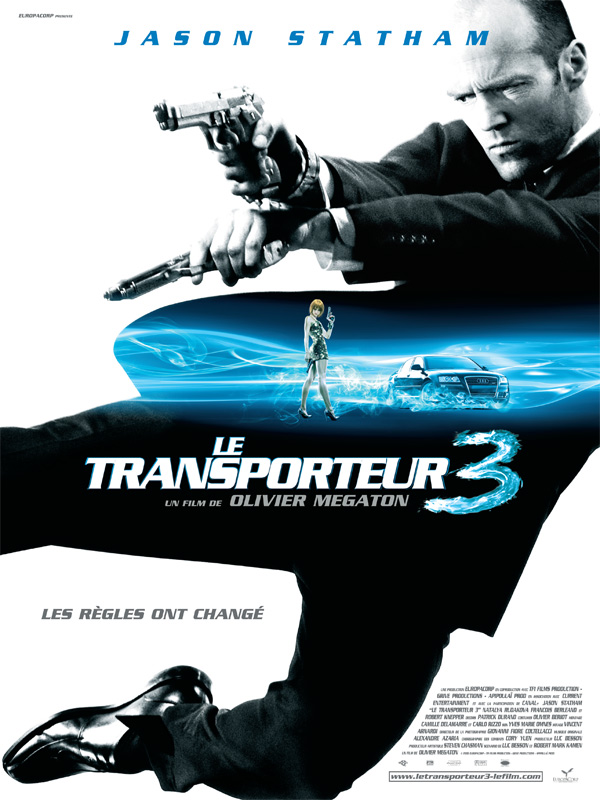
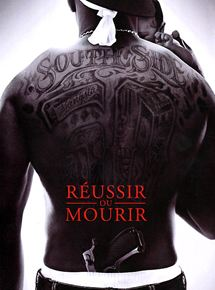
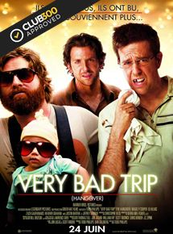

After one year and half in NYC , i'm actualling learning how to code @LeWagonLille.
My Wagon Profile|  |
TOP 1 26 novembre 2008 - Transporteur 3"Parce qu'il est le spécialiste incontesté des livraisons à haut risque, Frank Martin se voit contraint, sous la menace, de transporter deux sacs imposants et une jeune Ukrainienne depuis Marseille jusqu'à Odessa." |
|  |
TOP 2 22 février 2006 - Reussir ou mourrir"Un rêve habite Marcus depuis toujours : devenir rappeur. Mais lorsque sa mère est assassinée, l'adolescent perd brutalement ses repères et plonge dans le crime. Devenu dealer par nécessité, il se voit rapidement entraîné dans une spirale infernale, avec pour seuls garde-fous sa grand-mère, sa petite amie Charlene et son loyal ami Bama." |
|  |
TOP 3 24 juin 2009 - Very Bad Trip"Au réveil d'un enterrement de vie de garçon bien arrosé, les trois amis du fiancé se rendent compte qu'il a disparu 40 heures avant la cérémonie de mariage." |